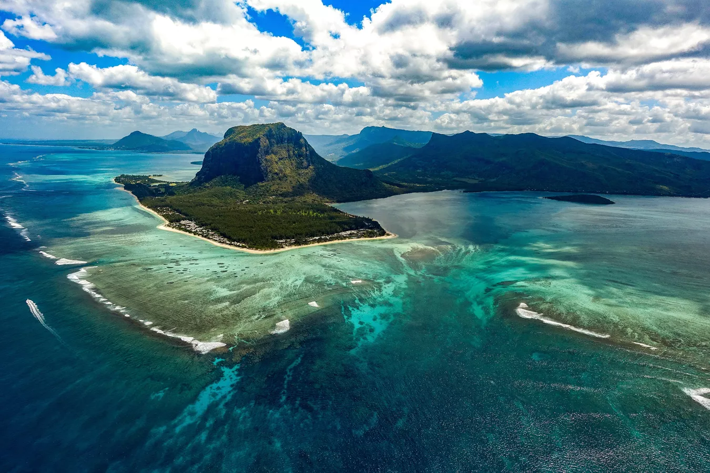

Маврикий
Маврикий – небольшое государство на островах в Индийском океане, знаменитое своими пляжами, лагунами и рифами. В
глубине страны в гористой местности раскинулся национальный парк Блэк-Ривер-Горжес. В тропических лесах парка
есть водопады и обитают различные дикие животные, например летучие лисицы. Также здесь проложены пешеходные
тропы. Столица Маврикия находится в городе Порт-Луи. К его достопримечательностям относится ипподром Марсово
поле, колониальный дом-музей "Эврика" и ботанический сад имени сэра Сивусагура Рамгулама.
- Столица - Порт-Луи
- Валюта - Маврикийская рупия
- Язык - маврикийский креольский, английский, французский
- Часовой пояс - +4
- Автомобильное движение - слева

Туризм
Отдых на Маврикии – это бескрайний океан, роскошные белоснежные пляжи, потрясающие пейзажи с живописными горами,
мягкий приятный климат, великолепные отели, лучшие повара мира, Spa-центры известных мировых марок, превосходные
поля для гольфа, замечательные возможности для занятия водными видами спорта : кайтинг, сёрфинг, дайвинг и др.
На Маврикии туристов ждет непревзойденный уровень сервиса, гостеприимство местного населения, широкий выбор
развлечений, прекрасная экология. Во многих отелях созданы все условия для отдыха с детьми, есть детские клубы,
бассейны и услуги нянь, большие удобные номера. В большинстве отелей есть дайвинг-центры. От отелей уровня 3* -
с демократичной атмосферой до отелей уровня Luxury, везде здесь одна отличительная особенность– это очень
высокий уровень сервиса и качественное обслуживание.
- Пляжный отдых. Маврикий — остров из сказки. Широкая полоса белоснежных пляжей, изрезанная бухтами, теплые
лазурные волны, обилие зелени и вечное солнце ждут путешественников, чтобы показать им, что такое счастье!
Температура воздуха и воды круглый год выше +20°C.
- Снорклинг и дайвинг. Пожалуй, после Красного моря южная часть Индийского океана — самое любимое место
поклонников подводного плавания. Богатейшая флора и фауна, включая морских черепах, создана для длительных и
неспешных исследований.
- Рыбалка. Выловить в открытом океане тунца или даже мечту старика из произведения Хемингуэя — голубого
марлина — сладкий сон многих рыбаков. В разгар сезона столько желающих попытать удачу и поймать настоящий
трофей, что лодки приходится бронировать заранее.
- Медовый месяц. Что нужно молодоженам? Красивые виды, отличное обслуживание и укромные места только для
двоих. Всего этого навалом на Маврикии!
- Туристы. А точнее, их отсутствие. Маврикий — это направление для элитного отдыха, поэтому здесь можно
заняться верховой ездой, игрой в теннис или гольф, посетить роскошный SPA-отель — и все это в гордом
одиночестве. Толп отдыхающих здесь не бывает никогда, а те, кто есть, ценят респектабельный отдых и уважают
потребность других в спокойствии и уединении.
 Туры на Маврикий
Туры на Маврикий